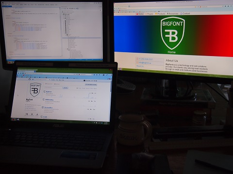

Joining the Three Monitor Club
I've been reading about three monitors being the productivity sweetspot. So, I decided to join the three monitor club.
My current setup had two monitors already.
- ASUS A55A notebook with a built-in monitor.
- LG FLATRON W1952TQ external monitor.
It did not have native support for three displays, though.
I looked at the Intel Configuration 3-Displays FAQ, because my laptop has an Intel chip and Intel video card. It turned out that my computer doesn't support three displays natively. This is good to know. Thank you to Brendan at Salt Spring Computer for the help.
- Graphics and chipsets requirements. Check. Intel Core i7 - 3610QM, 2.8 GHz with an Intel HD 4000 is appropriate!
- Operating system requirements. Check. Windows 8.
- Independent display configuration requirements. Bummer.
- Active Display 1 - LG FLATRON - this is a VGA.
- Active Display 2 - Build-in Display - this is a LVDS connector type.
- Active Display 3 - My third needs to be either DisplayPort or an Intel Wireless Display (WiDi). Bummer. My computer supports neither.
So, I bought a USB3 video card.
- An EVGA UV Plus+ Model: UV39 should do the trick.
- $70 from Mother Computers. I could go with a low cost vendor, but Mother Computers gives me terrific tech support over the phone, and I would like to support them.
Also, I bought a third monitor.
Purchase criteria:
- Long warranty, because a warranty often reflects how long the product is built to last.
- Under $200, because more than that is diminishing returns.
- Reasonable asthetics of the stand, because it's important to me.
- An HDMI input/output, because my laptop has an HDMI and a VGA, but my existing external monitor uses the VGA already.
I ended up purchasing the ASUS 23" LED Monitor with 2ms Response Time (VS238H-P) for $200 including tax
This is the final setup.

I am more productive already.